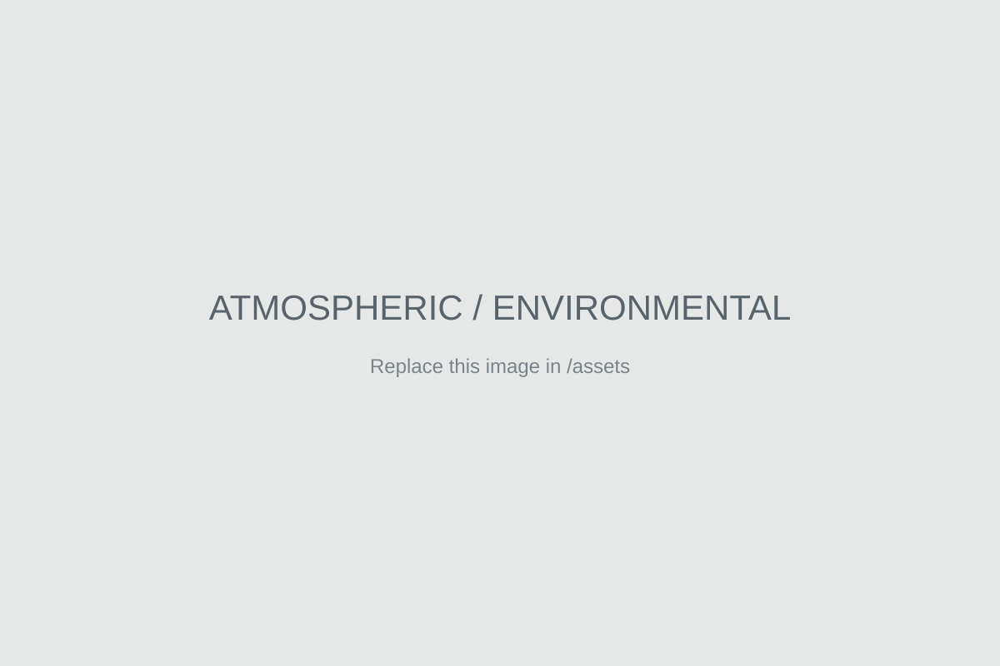
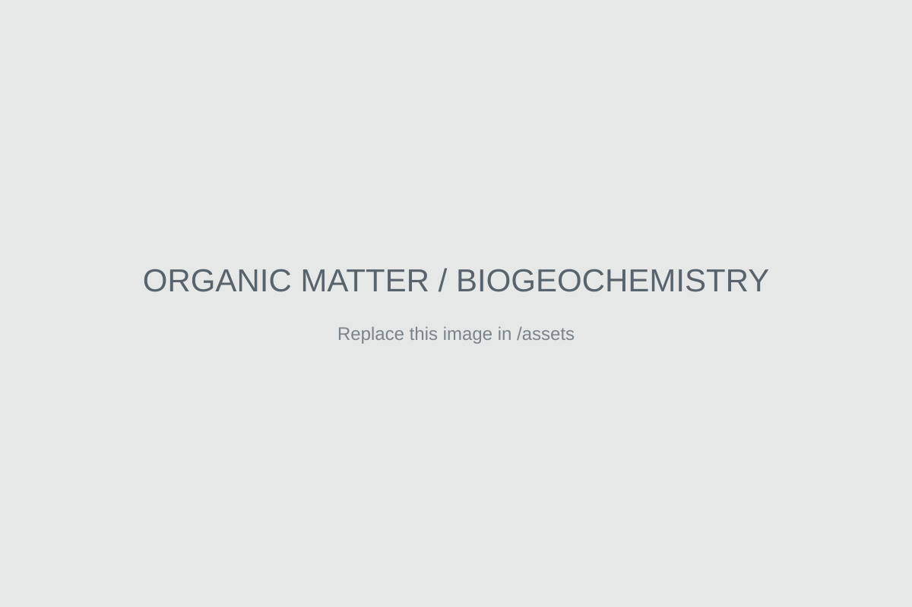
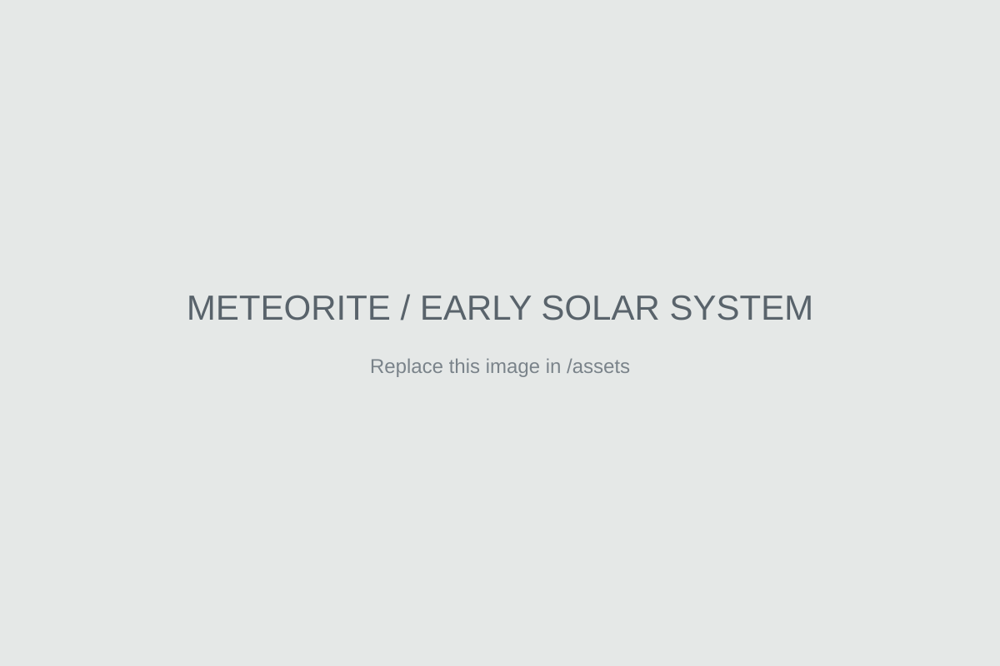

Atmospheric & Environmental Chemistry
Using oxygen isotope systematics to constrain atmospheric oxidation pathways, organic aerosol formation, and the chemistry connecting emissions to environmental impacts.
[Current Position] · [Institution]
I use stable isotope geochemistry to understand the chemical evolution of organic matter across atmospheric, terrestrial, and extraterrestrial environments.
My research combines high-precision isotope measurements, laboratory experiments, and environmental observations to trace chemical pathways from the early Solar System to Earth's atmosphere and surface environments.
Research
My independent research program centers on developing and applying isotope tools to reconstruct sources, reactions, and transport in complex chemical systems.

Using oxygen isotope systematics to constrain atmospheric oxidation pathways, organic aerosol formation, and the chemistry connecting emissions to environmental impacts.

Investigating how oxidation, degradation, and environmental processing reshape the molecular and isotopic composition of natural organic matter.

Applying triple oxygen isotopes to meteorite organic matter to reconstruct its formation, distribution, and alteration across the protoplanetary disk.
Selected Publications
2026
2025
Teaching & Mentoring
My teaching emphasizes quantitative reasoning, chemical intuition, and real environmental and planetary datasets.
I am interested in teaching general chemistry, analytical chemistry, environmental chemistry, isotope geochemistry, atmospheric chemistry, and Earth/planetary science.
Mentoring: [Add a short description of your mentoring experience.]
Curriculum Vitae
A complete academic CV is available as a PDF.
Open CVContact
Email: you@example.edu
Institution: [Department], [University]
Google Scholar: Profile
ORCID: Profile